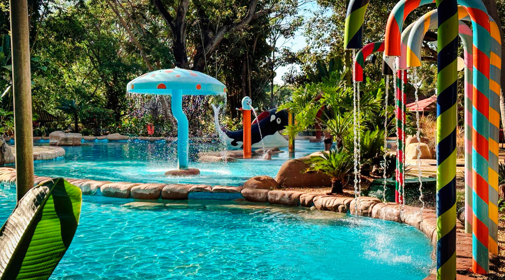
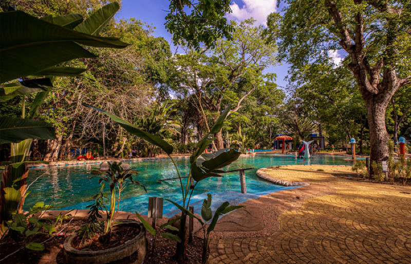
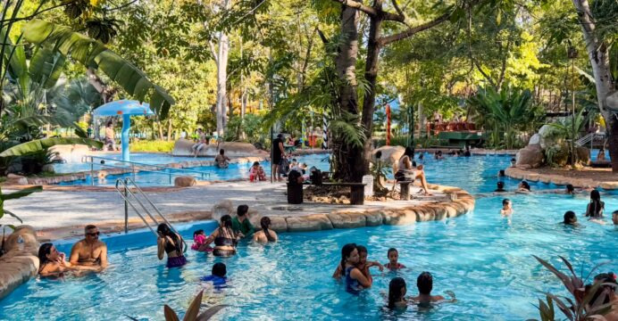

As Águas Quentes de Barra do Garças são um dos destinos turísticos mais conhecidos e visitados da região do Araguaia, em Mato Grosso. O local atrai moradores e turistas por suas piscinas naturais de águas termais, clima agradável e estrutura voltada para lazer e descanso. Cercado pela natureza do Cerrado brasileiro, o parque se tornou um importante ponto turístico da cidade, oferecendo diversão para todas as idades.
águas termais possuem temperaturas naturalmente elevadas, podendo variar entre aproximadamente 30°C e 43°C. O aquecimento acontece devido a fenôenos geológicos subterrâneos, tornando as piscinas agradáveis tanto durante o dia quanto à noite. Muitas pessoas visitam o local em busca de relaxamento, descanso e momentos de lazer em família.
Localizado próximo ao centro de Barra do Garças, o Parque das Águas Quentes possui fácil acesso e conta com diversas piscinas termais, áreas verdes, espaços para descanso, restaurantes e atrações voltadas ao turismo regional. O ambiente mistura natureza e infraestrutura turística, permitindo que os visitantes aproveitem o local com conforto e segurança.
Além das piscinas termais, o parque oferece espaços recreativos, áreas infantis, duchas naturais e ambientes ideais para contemplação da natureza. Durante feriados e temporadas de férias, o local recebe visitantes de várias regiões do Brasil, movimentando o turismo e a economia da cidade.

As Águas Quentes também fazem parte da identidade turística de Barra do Garças e são consideradas um dos principais cartões-postais da região. O contraste entre as águas aquecidas naturalmente e a paisagem do Cerrado cria uma experiência diferente e bastante procurada por turistas que desejam relaxar em meio à natureza.
Outro destaque do local é a possibilidade de aproveitar as piscinas durante a noite. As águas quentes, combinadas com o clima mais fresco do período noturno, tornam a experiência ainda mais agradável para os visitantes. Muitas pessoas escolhem o horário da noite para relaxar e aproveitar o ambiente iluminado do parque.
A região das Águas Quentes também possui áreas arborizadas e espaços de convivência que proporcionam conforto para famílias e grupos de amigos. O local é bastante utilizado para passeios turísticos, encontros familiares e momentos de descanso durante viagens pela região do Araguaia.
Além do lazer, muitas pessoas acreditam que as águas termais ajudam no relaxamento muscular e no alívio do estresse, tornando o passeio ainda mais procurado por visitantes que desejam tranquilidade e bem-estar. A temperatura agradável da água permite que o parque seja visitado em praticamente qualquer época do ano.

Para quem gosta de turismo e contato com a natureza, as Águas Quentes de Barra do Garças oferecem uma combinação entre descanso, diversão e paisagens naturais. O local é considerado um dos pontos turísticos mais importantes do município e recebe turistas interessados em conhecer as famosas águas termais da região.
As Águas Quentes continuam sendo um dos destinos mais visitados de Barra do Garças e ajudam a fortalecer o turismo regional no estado de Mato Grosso. Seja pelas piscinas termais, pela tranquilidade do ambiente ou pela experiência de relaxar em águas naturalmente aquecidas, o local se tornou uma referência turística para visitantes de todo o Brasil.
Além de toda a estrutura turística e das atrações naturais, o Parque das Águas Quentes possui localização de fácil acesso para visitantes que desejam conhecer um dos lugares mais famosos de Barra do Garças. Situado próximo à área urbana da cidade, o parque recebe turistas durante todo o ano e oferece uma experiência única de lazer e descanso em meio à natureza. Abaixo, é possível visualizar a localização das Águas Quentes e entender melhor onde está situado esse importante ponto turístico do estado de Mato Grosso.